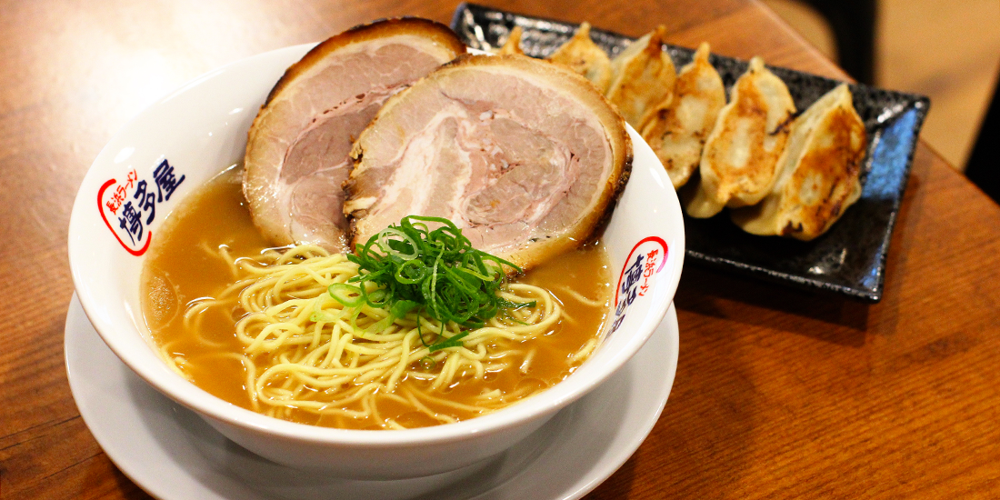

Ingredients
Salted pork
Soup
- 6 cups water (1.5L)
- 50g ginger root, sliced
- 3 cloves garlic, skinned
- 1 bunch green onions
- 4 tbsp soy sauce
- 2 tbsp sake
- 1 tsp salt
- 1 tsp sesame oil
Noodle
- 9 oz fresh angel hair pasta (225g)
- 8 cups water (2L)
- 2 tbsp baking soda
Topping
- boiled egg halves
- bean sprouts, blanched briefly
- green onions, cut finely
Instructions
- Rub salt on pork and let it sit overnight in the fridge.
- In a pot, put water, ginger root, garlic, green onions and
salted pork, and boil at high heat. Skim fat and other floating
scums. Then cover, reduce to low heat, and simmer for 1 1/2 to
2 hours. Let the broth and pork cool completely in pot. Strain
and save pork. Slice pork and set aside for a topping.
- Prepare the rest of the toppings now as well (boiled eggs,
blanched bean sprouts, cut green onions), before making the
soup and noodles. Once the noodles are cooked, you will need to
add the soup and toppings right away or the noodles will get
soft, so you won't have time to prepare the toppings at the end.
- Boil the broth and add soy sauce, sake, salt and sesame oil.
Let it simmer at very low heat until noodles are ready.
- In boiling water in a pot, add baking soda (be careful, it may
boil over), then add the fresh angel hair pasta. Cook the pasta
for 30 seconds, and strain. Immediately divide noodles into
bowls and add soup onto noodles. Top with boiled eggs, bean
sprouts, green onions and sliced pork.